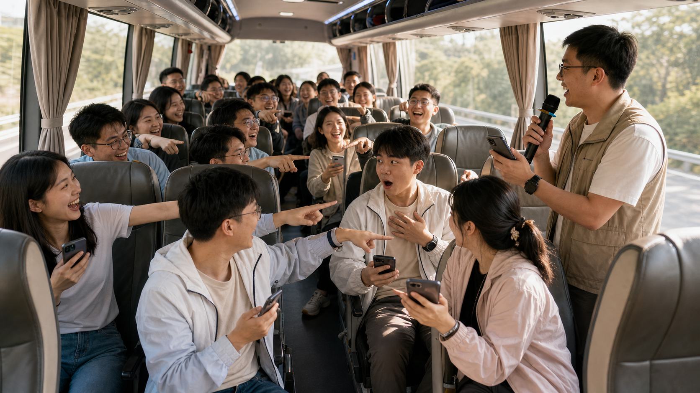
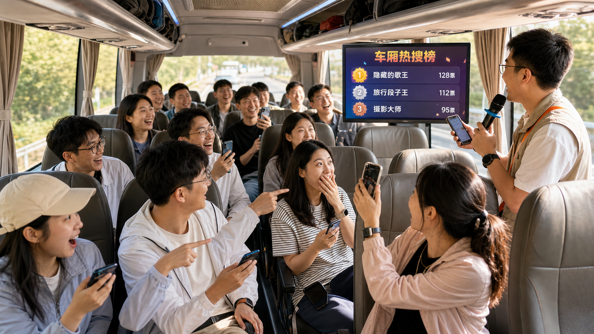
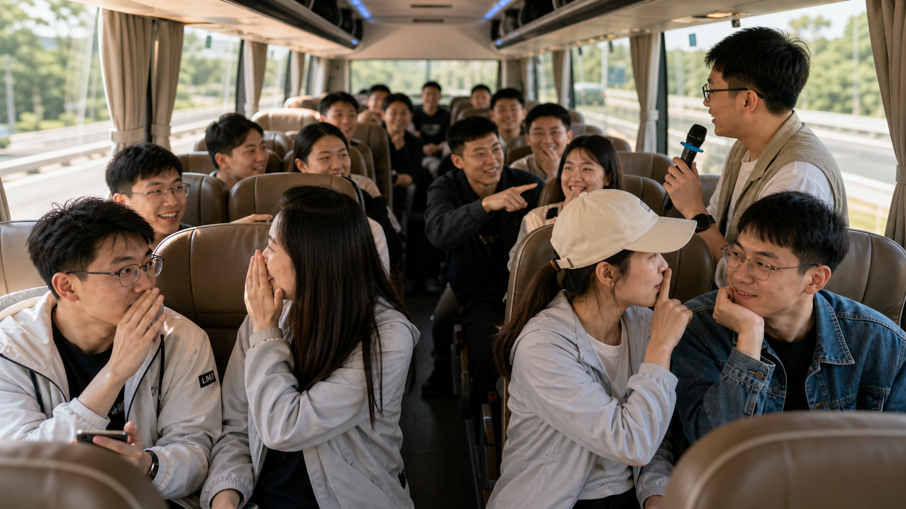
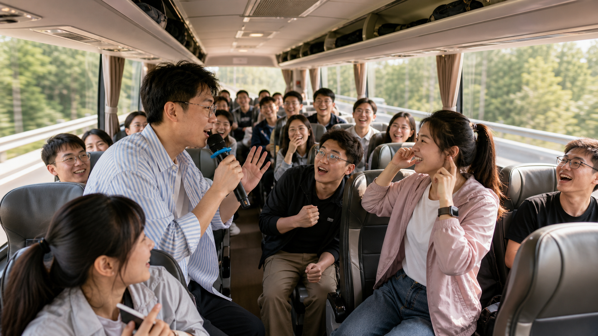
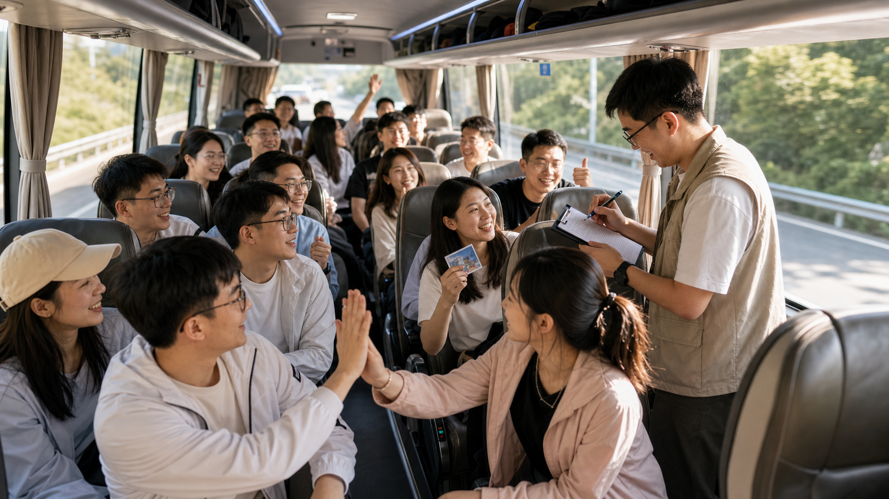

安全第一
所有互动都在座位附近完成，不要求站立、换座或大幅动作，不影响司机驾驶和车辆通行秩序。
执行原则
所有互动都在座位附近完成，不要求站立、换座或大幅动作，不影响司机驾驶和车辆通行秩序。
投票、隐藏任务、小组观察和即兴短剧都能覆盖10人以上，35人全员参与也不会显得拥挤。
避开单纯唱歌、成语接龙、击鼓传花等常见玩法，用热搜、卧底、盲盒、情报任务制造新鲜感。
游戏结果可以自然延伸到队名、口号、拍照姿势、补给分工和路上互动，让团建从上车开始进入状态。
五个可执行方案
每个方案都包含玩法、角色分工、准备道具和规则，可直接交给主持人执行。

匿名投票 + 现场揭晓 + 轻量回应
把全车员工变成“热搜制造机”。主持人抛出轻松话题，全员匿名投票，现场公布前三名并触发小回应任务。
主持人控场念题；计分员记录上榜次数；全员投票互动；上榜最多者成为“车厢热搜王”。
最像徒步领队的人、最可能第一个喊累的人、最适合开民宿的人、最像隐藏运动高手的人、今天最有综艺感的人、最可能带了最多零食的人、如果迷路最值得跟着走的人。
不能投自己；回应任务保持轻量；话题只做友好调侃，避开外貌、收入、隐私、职级等敏感内容。
适合开场快速破冰，能在不强迫表演的情况下让全车进入团建气氛。
主持开场：“接下来我们要发布今天第一批车厢热搜。投票只选最像，不选最尴尬，所有理由都要友好、有趣、不过界。”

隐藏身份 + 一句话发言 + 轻推理
大多数人拿到同一个旅行关键词，少数卧底拿到相近但不同的关键词。每人一句话描述，大家根据发言找出卧底。
主持人发身份和控节奏；普通成员隐藏共同关键词并找卧底；卧底回答要模糊；观察员记录精彩发言。
徒步/逛商场、爬山/泡温泉、团建/年会、背包/行李箱、山顶/餐厅、运动鞋/拖鞋。
每人每轮只说一句话；不能直接说关键词；卧底少于等于1人时普通成员获胜；卧底坚持到最后3人以内则卧底获胜。
比传统“谁是卧底”更贴合出行场景，推理轻、节奏快，适合中段把气氛再次拉起来。
主持提示：先选词义接近但行动差异明显的词组，避免过难。第一轮不急着淘汰太多人，让大家先适应表达方式。

场景题 + 情绪题 + 1分钟短剧
把窗外路景、车内人物和徒步想象变成即兴配音短剧。每组抽取一个场景和一种风格，准备1分钟，表演1分钟。
主持人抽题计时；表演组完成即兴演绎；观众组投票；摄影记录员拍下精彩片段用于回顾。
场景：精英徒步队只带了零食没带水、山顶突然出现神秘任务、大巴变成冠军领奖台、户外纪录片解说员、队伍里混入只想吃饭的人。
悬疑片、新闻联播、霸总剧、动物世界解说、武侠片、选秀导师点评。每人至少一句台词，不能恶意模仿具体同事。
综艺效果最强，适合后段提神，但主持人要控制音量和表演动作，确保不影响行车安全。
主持提示：让每组先指定“开头人”和“收尾人”，中间成员只要接一句即可，能明显降低临场压力。

隐藏任务 + 自然触发 + 阶段结算
每个人随机获得一张隐藏任务卡，在车程中自然完成。任务成功后找主持人认证得分，中途每15至20分钟结算一次。
主持人发任务、认证和公布积分；玩家隐藏完成；2名监督员协助判断；气氛组提前带动互动。
让3个人主动跟你击掌、让5个人说出“今天一定能登顶”、让一个人唱一句歌、找到同月生日的人、让别人主动问你带了什么吃的、让一位同事夸你的装备、让10个人一起做出发手势。
不能命令式强迫配合；不能直接展示任务卡；普通任务1分，高难任务2分；到达前积分最高者获得“最佳隐藏任务王”。
最适合穿插在全程，互动不会集中爆发，也能让不爱表演的人悄悄参与进来。
主持提示：任务难度要分层，最好准备5张补救卡。结算时让完成者复盘“你是怎么做到的”，笑点会更自然。

窗外观察 + 小组共创 + 抵达前颁奖
每组拿到一张情报清单，观察窗外、车内和团队状态，完成打卡并进行30秒分享。它不是找物品，而是找画面、故事和团队角色。
主持人发布清单和打分；组长组织讨论；观察员看窗外和车内细节；记录员写答案；发言人展示。
找到最像徒步电影开场的窗外画面、发现绿色元素招牌、记录一句车上最有趣发言、给本车起队名、设计徒步口号、找到适合拍团建大片的路段、用窗外三个元素编30秒故事。
每组必须集体完成；完成一项得1分，创意特别好加1分；分享控制在30秒以内；总分最高者获得“最佳情报小队”。
临近目的地时使用效果最好，能把车上情绪自然转到下车后的徒步队伍和拍照任务。
主持提示：提前把每组座位范围划好，避免大家为了组队换座。抽查时只让一名代表发言，节奏会更利落。
推荐组合安排
优先使用“车厢热搜榜”开场，再穿插“车厢任务盲盒”，最后用“即兴配音巴士”做一次高点收束。
开场热搜榜，中段卧底旅行团，全程穿插任务盲盒，后段即兴配音，临近目的地用情报猎人总结颁奖。
车厢热搜王、最佳隐藏任务王、最佳戏精、最强卧底、最佳情报小队、今日徒步气氛担当。